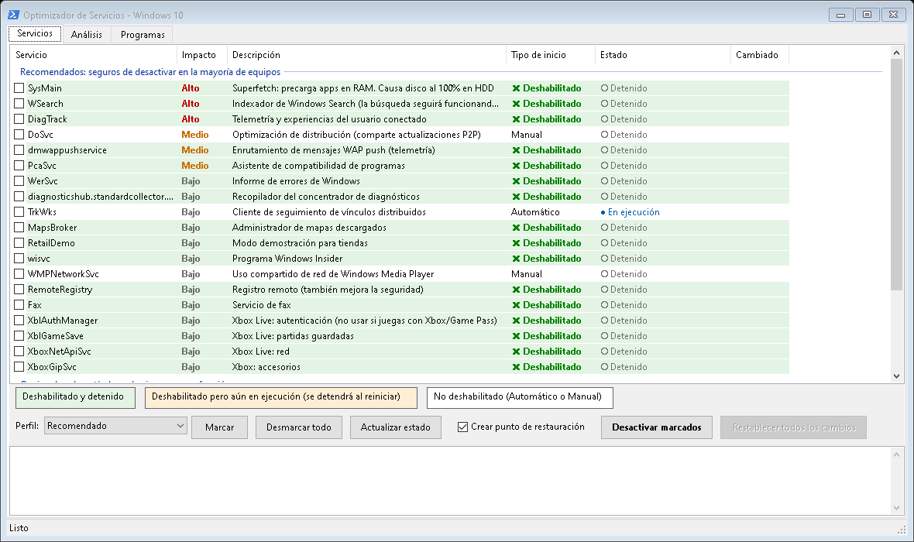
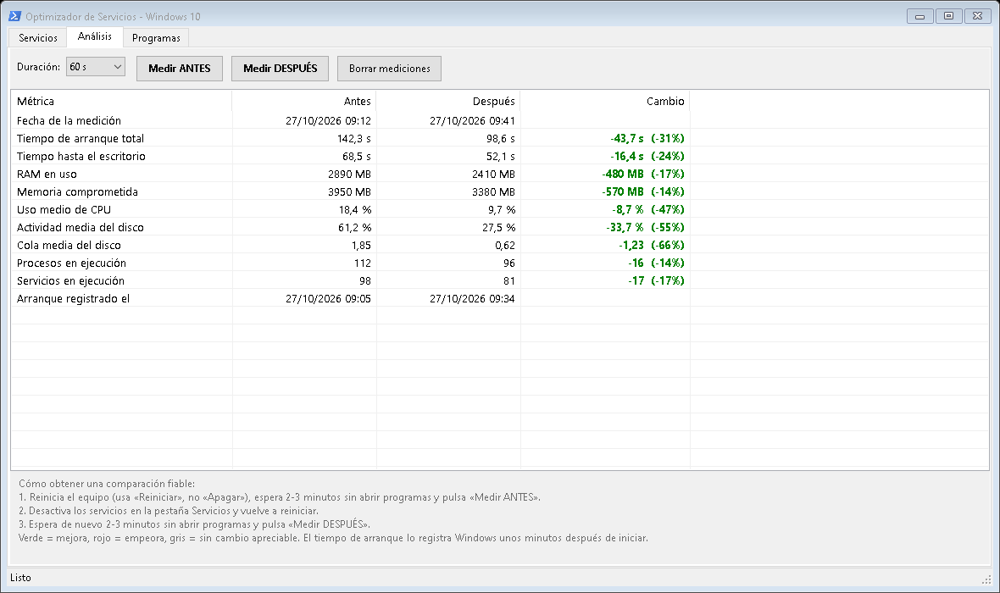

Herramienta portable para desactivar de forma selectiva y reversible los servicios de Windows 10 que más penalizan el rendimiento en equipos modestos (4 GB de RAM y disco duro mecánico), medir el efecto de los cambios y desplegarlos en los equipos de una empresa, centro educativo u organización.
OptimizadorServicios.exe
Windows 10 arranca muchos servicios que, en un equipo con poca memoria y un disco duro mecánico, compiten por el disco y la RAM aunque el usuario no los necesite. El Optimizador de Servicios permite:
El programa no modifica Windows Update, Windows Defender ni ningún servicio fuera de su catálogo, para no comprometer la seguridad del equipo.
| Requisito | Detalle |
|---|---|
| Sistema operativo | Windows 10 (también funciona en Windows 11). |
| .NET Framework 4.x | Incluido de serie en Windows 10. No hay que instalar nada. |
| Permisos | Administrador. Al abrirlo, Windows pide confirmación (UAC). Ejecutado como SYSTEM (GPO, Intune) no pide nada. |
| Instalación | Ninguna: es un único archivo portable (unos 70 KB). |
| Archivo | Para qué sirve |
|---|---|
dist\OptimizadorServicios.exe | El programa: interfaz gráfica y línea de comandos en un solo archivo. |
despliegue\aplicar.cmd | Script de ejemplo para aplicar un perfil (GPO, Intune, SCCM…). |
despliegue\restablecer.cmd | Script de ejemplo para revertir los cambios. |
despliegue\perfil-personalizado.txt | Ejemplo de lista propia de servicios. |
Optimizar-Servicios.ps1 y .bat | Versión de consola simplificada (ver capítulo 7). |
src\ y build.ps1 | Código fuente y script para volver a compilar el .exe. |
Los servicios de Windows pertenecen al equipo, no a cada usuario: se inician con el sistema, antes de que nadie inicie sesión, y son compartidos por todas las cuentas. Por tanto, cuando se deshabilita un servicio queda deshabilitado para todos los usuarios del equipo. No es posible desactivarlo solo para una cuenta.
Esto es precisamente lo que interesa en organizaciones: la configuración se aplica por equipo (por ejemplo, a todos los ordenadores de un aula o de una unidad organizativa), con independencia de quién inicie sesión.
Cada servicio tiene dos propiedades independientes, que el programa muestra en columnas separadas:
| Tipo de inicio | Significado |
|---|---|
| Automático | Arranca con Windows. |
| Manual | Arranca cuando algo lo solicita. |
| Deshabilitado | No puede arrancar. |
| Estado | Significado |
|---|---|
| En ejecución | Está funcionando ahora. |
| Detenido | No está funcionando. |
Al desactivar un servicio, el programa primero lo pone en Deshabilitado y después intenta detenerlo (espera como máximo 20 segundos). Si no se detiene a tiempo —le ocurre a veces a SysMain en discos lentos— queda deshabilitado pero aún en ejecución hasta el siguiente reinicio, tras el cual ya no arranca.
Antes de cambiar un servicio por primera vez, el programa guarda su tipo de inicio original y si estaba en ejecución. Aunque se aplique el mismo cambio muchas veces (por ejemplo, en cada arranque mediante GPO), la copia conserva siempre el estado original, de modo que Restablecer devuelve el equipo a como estaba antes de usar el programa.
La copia se guarda en cada equipo, así que restablecer funciona aunque el programa se ejecute desde otra ubicación (un USB, una carpeta de red…). Tras restablecer, se recomienda reiniciar.
C:\ProgramData\OptimizadorServicios, se pierde la copia de seguridad y ya no será
posible restablecer automáticamente los servicios a su estado original.Todo se guarda en C:\ProgramData\OptimizadorServicios\:
| Archivo | Contenido |
|---|---|
backup.json | Estado original de cada servicio modificado. Imprescindible para restablecer. |
registro.log | Historial de todas las acciones, con fecha y hora. |
mediciones.json | Mediciones ANTES y DESPUÉS de la pestaña Análisis. |
estado.json | Fecha del último cambio, para saber si falta reiniciar o medir. |
El programa solo actúa sobre los servicios de este catálogo. Los que no existan en un equipo concreto se omiten. Las cuatro últimas columnas indican qué perfiles incluyen cada servicio (Recomendado, Conservador, Oficina, Aulas).
| Servicio | Impacto | Descripción | R | C | O | A |
|---|---|---|---|---|---|---|
SysMain | Alto | Superfetch: precarga programas en RAM. Principal causa del «disco al 100 %» en HDD. | ● | ● | ● | |
WSearch | Alto | Indexador de Windows Search. La búsqueda sigue funcionando, pero más lenta. | ● | ● | ||
DiagTrack | Alto | Telemetría y experiencias del usuario conectado. | ● | ● | ● | ● |
DoSvc | Medio | Optimización de distribución (comparte actualizaciones entre equipos). | ● | ● | ● | |
dmwappushservice | Medio | Enrutamiento de mensajes WAP push (telemetría). | ● | ● | ● | ● |
PcaSvc | Medio | Asistente de compatibilidad de programas. | ● | ● | ● | |
WerSvc | Bajo | Informe de errores de Windows. | ● | ● | ● | ● |
diagnosticshub.standardcollector.service | Bajo | Recopilador del concentrador de diagnósticos. | ● | ● | ● | ● |
TrkWks | Bajo | Seguimiento de vínculos distribuidos. | ● | ● | ● | |
MapsBroker | Bajo | Administrador de mapas descargados. | ● | ● | ● | ● |
RetailDemo | Bajo | Modo demostración para tiendas. | ● | ● | ● | ● |
wisvc | Bajo | Programa Windows Insider. | ● | ● | ● | ● |
WMPNetworkSvc | Bajo | Uso compartido de red de Windows Media Player. | ● | ● | ● | ● |
RemoteRegistry | Bajo | Registro remoto (desactivarlo también mejora la seguridad). | ● | ● | ● | |
Fax | Bajo | Servicio de fax. | ● | ● | ● | ● |
XblAuthManager, XblGameSave, XboxNetApiSvc, XboxGipSvc | Bajo | Servicios de Xbox Live y accesorios de Xbox. | ● | ● | ● | ● |
lfsvc | Bajo | Geolocalización (Mapas, Tiempo, zona horaria automática). | ● | |||
WbioSrvc | Bajo | Biometría: huella y Windows Hello. | ● | |||
Spooler | Medio | Cola de impresión. Necesario para imprimir (incluido «Imprimir a PDF»). | ||||
bthserv | Bajo | Bluetooth. Necesario para ratones y auriculares Bluetooth. | ||||
TabletInputService | Bajo | Teclado táctil y escritura a mano. Puede afectar a la entrada de texto. |
| Perfil | Identificador | Cuándo usarlo |
|---|---|---|
| Recomendado | recomendado | Equipos individuales o domésticos. Máxima mejora con riesgo bajo. |
| Conservador | conservador | Primera prueba en una organización: solo quita telemetría, diagnósticos, Xbox y extras. El usuario no nota ningún cambio funcional. |
| Oficina / empresa | oficina | Puestos de oficina. Igual que Recomendado pero mantiene Windows Search, que necesita la búsqueda de Outlook y del Explorador. |
| Aulas / compartidos | aulas | Aulas de informática, bibliotecas, equipos de uso compartido. Recomendado + geolocalización y biometría. |
Spooler, bthserv y TabletInputService solo se desactivan si se eligen
expresamente (en la interfaz o con una lista propia). Desactivar Spooler impide imprimir.Haz doble clic en OptimizadorServicios.exe y acepta el aviso de permisos de administrador. Se abre una
ventana con tres pestañas: Servicios, Análisis y Programas.

La lista muestra los servicios agrupados en Recomendados y Opcionales. El color de fondo de cada fila resume su situación:
| Fondo | Significado |
|---|---|
| Verde | Deshabilitado y detenido: el cambio ya tiene efecto. |
| Naranja | Deshabilitado pero aún en ejecución: se detendrá al reiniciar. |
| Blanco | No deshabilitado (Automático o Manual). |
La columna Cambiado indica qué servicios ha modificado el programa y, por tanto, se pueden restablecer.
El botón Restablecer todos los cambios (indica entre paréntesis cuántos hay) devuelve todos los servicios modificados a su estado original. Después ofrece reiniciar.

Mide el rendimiento durante 30, 60 o 120 segundos y guarda el resultado como ANTES o DESPUÉS. La columna Cambio aparece en verde si mejora, rojo si empeora y gris si la diferencia es inferior al 3 %.
| Métrica | Qué mide |
|---|---|
| Tiempo de arranque total | Desde que se enciende hasta que el sistema queda en reposo. Lo registra Windows unos minutos después de cada inicio. |
| Tiempo hasta el escritorio | Desde que se enciende hasta que el escritorio es utilizable. |
| RAM en uso / Memoria comprometida | Memoria física ocupada y memoria total reservada (RAM + archivo de paginación). |
| Uso medio de CPU | Porcentaje medio del procesador durante la medición. |
| Actividad media del disco | Porcentaje de tiempo que el disco está ocupado. Es la métrica más importante en un HDD. |
| Cola media del disco | Peticiones esperando al disco. Valores sostenidos por encima de 1–2 indican un cuello de botella. |
| Procesos / servicios en ejecución | Número medio de procesos y servicios activos. |
Para que la comparación sea fiable, el programa guía al usuario por este ciclo:
Además de los servicios, muchos equipos se ralentizan por programas de terceros que se inician con Windows o que consumen recursos en segundo plano. Pulsa Analizar programas (20 s) y usa el equipo con normalidad mientras tanto. El resultado aparece en dos listas; las filas en naranja son las que conviene revisar.
Reúne lo que arranca automáticamente desde el registro (claves Run del equipo y del usuario) y desde las carpetas Inicio. Los componentes de Windows no se muestran.
| Columna | Significado |
|---|---|
| Impacto en el arranque | Cuántas veces ha registrado Windows que ese programa retrasó el arranque y el retraso máximo, según su propio diagnóstico de rendimiento (eventos 101). Se resaltan en naranja. |
| Estado | Activado o Desactivado. Es el mismo estado que muestra la pestaña Inicio del Administrador de tareas. |
| Origen | Dónde está configurado el inicio. «Detectado por Windows (otro origen)» indica un programa lento que se lanza de otra forma (por ejemplo, desde un servicio); se puede desinstalar pero no desactivar desde aquí. |
| Programa instalado | Programa de «Aplicaciones y características» al que pertenece, si se ha podido identificar. |
Mide durante 20 segundos la CPU, la memoria y la actividad de disco de cada programa de terceros (agrupando todos sus procesos). Se resalta en naranja si supera alguno de estos umbrales: CPU ≥ 5 %, RAM ≥ 300 MB o disco ≥ 1 MB/s.
| Botón | Qué hace |
|---|---|
| Desactivar del inicio | El programa deja de arrancar con Windows, pero no se desinstala. Es reversible con Activar en el inicio o desde el Administrador de tareas. Forma parte del ciclo guiado (4.3): ofrece medir antes y reiniciar después. |
| Desinstalar programa… | Abre el desinstalador del propio programa, tras pedir confirmación. Si parece un antivirus, un controlador o software del fabricante del equipo, muestra un aviso adicional. No se puede deshacer desde el optimizador. |
| Abrir ubicación | Abre la carpeta del ejecutable en el Explorador. |
| Programas y características | Abre el panel clásico de Windows para desinstalar o cambiar programas (appwiz.cpl). |
| Aplicaciones y características | Abre la configuración de Windows. Úsalo para las aplicaciones de la Tienda, que no tienen desinstalador propio. |
El mismo OptimizadorServicios.exe funciona sin ventanas cuando recibe parámetros. Esto permite
aplicar la configuración en todos los equipos de una organización mediante una directiva de grupo, Intune,
SCCM, PDQ Deploy o cualquier herramienta capaz de ejecutar un programa como administrador o SYSTEM.
conservador u oficina.OptimizadorServicios.exe /aplicar:<perfil | archivo.txt | Serv1,Serv2> [/punto] [/reiniciar] [/log:<ruta>] OptimizadorServicios.exe /restablecer [/reiniciar] [/log:<ruta>] OptimizadorServicios.exe /estado [/log:<ruta>] OptimizadorServicios.exe /perfiles OptimizadorServicios.exe /ayuda
| Parámetro | Descripción |
|---|---|
/aplicar:<valor> | Deshabilita los servicios indicados. El valor puede ser un perfil (recomendado, conservador, oficina, aulas), la ruta a un archivo .txt (5.7) o una lista separada por comas. Solo se admiten servicios del catálogo. Los servicios ya deshabilitados se omiten, así que se puede ejecutar en cada arranque. |
/restablecer | Devuelve todos los servicios modificados a su estado original. |
/estado | Lista los servicios del catálogo con su tipo de inicio, estado y si han sido modificados. Útil para inventario. |
/perfiles | Muestra los perfiles y los servicios que incluye cada uno. |
/punto | Crea un punto de restauración antes de aplicar (requiere la Protección del sistema activada). |
/reiniciar | Reinicia el equipo 60 segundos después, solo si se ha cambiado algo. El usuario ve un aviso. |
/log:<ruta> | Copia cada línea del registro, con el nombre del equipo, a otro archivo. Admite variables como %COMPUTERNAME% y rutas de red. |
| Código | Significado |
|---|---|
| 0 | Correcto (incluye «sin cambios: todo estaba ya aplicado»). |
| 1 | Algún servicio no se pudo cambiar. El detalle está en el registro. |
| 2 | Parámetros no válidos. |
cmd no espera a que termine. Usa
start "" /wait para esperar y obtener el código de salida en %errorlevel%. Desde una
consola sin permisos de administrador, Windows mostrará el aviso UAC.rem Aplicar el perfil de oficina y guardar el registro en una carpeta de red start "" /wait OptimizadorServicios.exe /aplicar:oficina /log:"\\servidor\registros\%COMPUTERNAME%.log" rem Aplicar dos servicios concretos con punto de restauración y reinicio start "" /wait OptimizadorServicios.exe /aplicar:SysMain,DiagTrack /punto /reiniciar rem Revertir todo start "" /wait OptimizadorServicios.exe /restablecer rem Inventario del estado actual start "" /wait OptimizadorServicios.exe /estado /log:"\\servidor\inventario\%COMPUTERNAME%.txt"
Cuando el programa se ejecuta como SYSTEM (scripts de inicio de GPO, Intune, SCCM), accede a la red con la cuenta del equipo, no con la de un usuario. Por eso hay que dar permisos al grupo Equipos del dominio (Domain Computers):
| Carpeta (ejemplo) | Contenido | Permisos para «Equipos del dominio» |
|---|---|---|
\\servidor\software | OptimizadorServicios.exe y perfiles .txt | Lectura (compartir y NTFS). |
\\servidor\registros\optimizador | Un registro por equipo | Modificar (compartir: cambiar; NTFS: modificar). |
.exe dentro de la propia GPO (se replica por SYSVOL) o en cada equipo, por
ejemplo en C:\ProgramData\OptimizadorServicios\, y usar esa ruta local en el script.Es el método recomendado en dominios de Active Directory. El script se ejecuta como SYSTEM en cada arranque, antes de que el usuario inicie sesión, sin avisos de UAC.
Edita despliegue\aplicar.cmd y ajusta las tres variables de configuración:
set "EXE=\\servidor\software\OptimizadorServicios.exe" set "PERFIL=aulas" set "LOG=\\servidor\registros\optimizador\%COMPUTERNAME%.log" set "OPCIONES="
PERFIL puede ser un perfil o la ruta UNC a un archivo .txt. En OPCIONES puedes añadir
/reiniciar si quieres que el equipo se reinicie automáticamente la primera vez que se apliquen
cambios (en los siguientes arranques no reinicia, porque ya no hay nada que cambiar).
gpmc.msc).aplicar.cmd. Cierra la carpeta.aplicar.cmd y acepta.gpupdate /force como administrador y reinicia (o espera al siguiente reinicio).gpresult /r /scope computer debe mostrarla en Objetos de directiva de grupo aplicados.C:\ProgramData\OptimizadorServicios\registro.log.Para equipos gestionados con Microsoft Intune, lo más práctico es empaquetar el programa como aplicación Win32, que se ejecuta en contexto de sistema:
OptimizadorServicios.exe (y el .txt si usas un perfil personalizado).IntuneWinAppUtil.exe -c <carpeta> -s OptimizadorServicios.exe -o <salida>.intunewin.| Comando de instalación | OptimizadorServicios.exe /aplicar:oficina |
| Comando de desinstalación | OptimizadorServicios.exe /restablecer |
| Comportamiento de instalación | Sistema |
| Reinicio del dispositivo | Determinar el comportamiento en función de los códigos de retorno (o «Intune forzará un reinicio obligatorio» si quieres reinicio inmediato) |
| Códigos de retorno | 0 = correcto; 1 = error |
C:\ProgramData\OptimizadorServicios, archivo backup.json, método «El archivo o la carpeta existe»./restablecer en los equipos y los servicios
volverán a su estado original..exe; línea de comandos OptimizadorServicios.exe /aplicar:<perfil>, ejecución «tanto si el usuario ha iniciado sesión como si no», con derechos administrativos. Misma regla de detección que en Intune..exe y los parámetros, ejecutando como «Deploy User» o «Local System». Códigos de éxito: 0.aplicar.cmd puede programarse como tarea al inicio del sistema, ejecutada como SYSTEM..exe en un USB y ejecútalo con la interfaz gráfica, o usa /aplicar desde una consola de administrador.Si ningún perfil se ajusta, crea un archivo de texto con un servicio por línea. Todo lo que vaya detrás de
# se ignora. Ejemplo (despliegue\perfil-personalizado.txt):
# Perfil para la sala de profesores SysMain # Superfetch: lo que más penaliza en discos HDD DiagTrack # Telemetría dmwappushservice WerSvc Fax XblAuthManager XblGameSave
Úsalo con /aplicar:\\servidor\software\perfil-profesores.txt. Los nombres que no estén en el catálogo
se omiten y quedan anotados en el registro como «Omitido».
Con /log, cada equipo escribe su resultado en la carpeta compartida. Ejemplo de un primer arranque:
2026-10-30 08:02:11 AULA2-PC07 Perfil: Aulas / equipos compartidos 2026-10-30 08:02:12 AULA2-PC07 Deshabilitado: SysMain 2026-10-30 08:02:13 AULA2-PC07 Deshabilitado: WSearch 2026-10-30 08:02:13 AULA2-PC07 Deshabilitado: DiagTrack ... 2026-10-30 08:02:20 AULA2-PC07 Aplicado: 21 servicios deshabilitados, 0 errores.
Y en los arranques siguientes:
2026-10-31 08:01:54 AULA2-PC07 Ya deshabilitado: SysMain ... 2026-10-31 08:01:55 AULA2-PC07 Sin cambios: todo estaba ya aplicado.
Para localizar rápidamente los equipos con problemas, busca la palabra ERROR en la carpeta de registros:
findstr /s /i /m "ERROR" \\servidor\registros\optimizador\*.log
/estado genera una tabla por equipo, útil para auditorías:
SERVICIO INICIO ESTADO CAMBIADO SysMain Deshabilitado Detenido Sí WSearch Deshabilitado Detenido Sí Spooler Automático En ejecución ...
Las mediciones de la pestaña Análisis no se realizan en el modo de línea de comandos. Para cuantificar la mejora, mide en uno o varios equipos piloto con la interfaz gráfica (capítulo 4) antes de desplegar.
aplicar.cmd de los scripts de inicio (si no, volvería a aplicar los cambios en cada arranque).despliegue\restablecer.cmd como script de inicio, con las mismas rutas.En Intune basta con cambiar la asignación a Desinstalar (ver 5.5).
| Problema | Causa probable | Solución |
|---|---|---|
| «Windows protegió su PC» al abrirlo | El ejecutable no está firmado. | Más información → Ejecutar de todas formas. En organizaciones, firmarlo o permitirlo en el antivirus. |
| El antivirus lo bloquea | Cambia la configuración de servicios con permisos de administrador. | Añadir una exclusión para el ejecutable o firmarlo. |
| El script de GPO no se ejecuta | La GPO está vinculada a una OU de usuarios, o el equipo no tiene permisos en la carpeta compartida. | Vincularla a la OU de equipos; dar lectura a «Equipos del dominio»; comprobar con gpresult /r /scope computer. |
| No aparece el registro en la carpeta de red | Falta permiso de escritura para la cuenta del equipo, o la red no estaba lista. | Dar «Modificar» a «Equipos del dominio»; habilitar la espera a la red (ver 5.4). El registro local en C:\ProgramData\OptimizadorServicios se escribe siempre. |
| Un servicio aparece en naranja / «aún en ejecución» | No se detuvo en 20 segundos (frecuente en SysMain con HDD). | Normal: está deshabilitado y no arrancará tras reiniciar. |
| Un servicio vuelve a estar activo | Algunas actualizaciones de Windows restauran servicios (p. ej. DoSvc). | Mantener la GPO activa: lo vuelve a deshabilitar en el siguiente arranque. |
| La búsqueda de Outlook o del Explorador es muy lenta | Se desactivó WSearch. | Usar el perfil oficina o restablecer. |
| No se puede imprimir | Se desactivó Spooler manualmente. | Restablecer, o volver a ponerlo en Automático desde services.msc. |
| No se abre solo tras reiniciar | No se pudo crear la tarea programada (se anota en el registro). | Abrirlo manualmente: ofrecerá igualmente medir DESPUÉS. |
| El tiempo de arranque aparece como «n/d» | Windows todavía no ha registrado el arranque, o se usó «Apagar» en lugar de «Reiniciar». | Esperar unos minutos tras el inicio y repetir la medición; usar «Reiniciar». |
| Un programa aparece como «No identificado» | No figura en el registro de desinstalación o está en una carpeta compartida con otros. | Usar «Abrir ubicación» para identificarlo y desinstalarlo desde «Aplicaciones y características». |
| «Impacto en el arranque» siempre dice «Sin retrasos registrados» | Windows no ha detectado arranques lentos, o el equipo se reinstaló hace poco. | Normal. Para juzgar el consumo, fíjate en la lista de uso normal. |
| «Restablecer» no hace nada | No hay copia de seguridad (no se cambió nada, o se borró la carpeta de datos). | Si se borró, restaurar desde un punto de restauración o ajustar los servicios en services.msc. |
Optimizar-Servicios.ps1 es una versión de consola con menú, para quien prefiera no usar el ejecutable.
Se abre con Optimizar-Servicios.bat (pide permisos de administrador automáticamente).
| Tecla | Acción |
|---|---|
1,3,5-8 | Marcar o desmarcar servicios por número o rango. |
T / N | Marcar los recomendados / desmarcar todos. |
D | Desactivar los marcados (con opción de punto de restauración). |
R | Restablecer todos los cambios. |
S | Salir. |
Comparte la copia de seguridad con el ejecutable, por lo que los cambios hechos con una versión se pueden restablecer con la otra. No incluye mediciones, perfiles ni modo de despliegue.
| Quiero… | Comando |
|---|---|
| Usar la interfaz gráfica | OptimizadorServicios.exe |
| Aplicar un perfil | OptimizadorServicios.exe /aplicar:oficina |
| Aplicar una lista propia | OptimizadorServicios.exe /aplicar:mi-perfil.txt |
| Aplicar y reiniciar si hace falta | OptimizadorServicios.exe /aplicar:aulas /reiniciar |
| Revertir todo | OptimizadorServicios.exe /restablecer |
| Ver el estado | OptimizadorServicios.exe /estado |
| Ver los perfiles | OptimizadorServicios.exe /perfiles |
| Guardar el registro en la red | /log:"\\servidor\registros\%COMPUTERNAME%.log" |
| Elemento | Ubicación |
|---|---|
| Datos, copia de seguridad y registro | C:\ProgramData\OptimizadorServicios\ |
| Tarea de reapertura tras reiniciar | Programador de tareas: OptimizadorServicios_MedirDespues (se borra sola) |
| Script de inicio por GPO | Configuración del equipo › Directivas › Configuración de Windows › Scripts › Inicio |
powershell -ExecutionPolicy Bypass -File build.ps1
Usa el compilador de C# incluido en .NET Framework 4; no requiere Visual Studio.